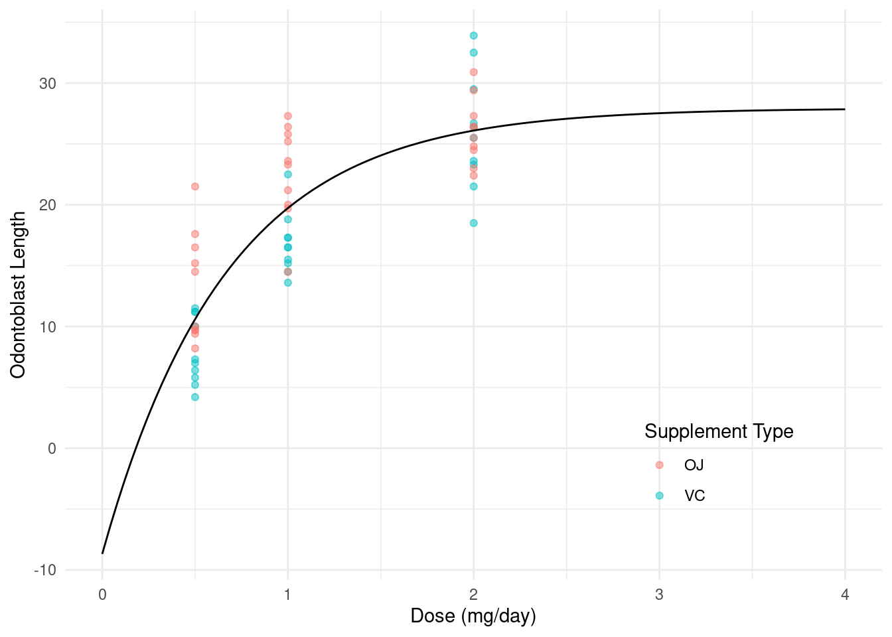
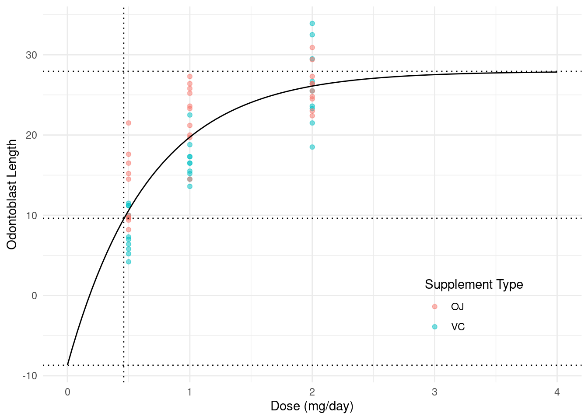
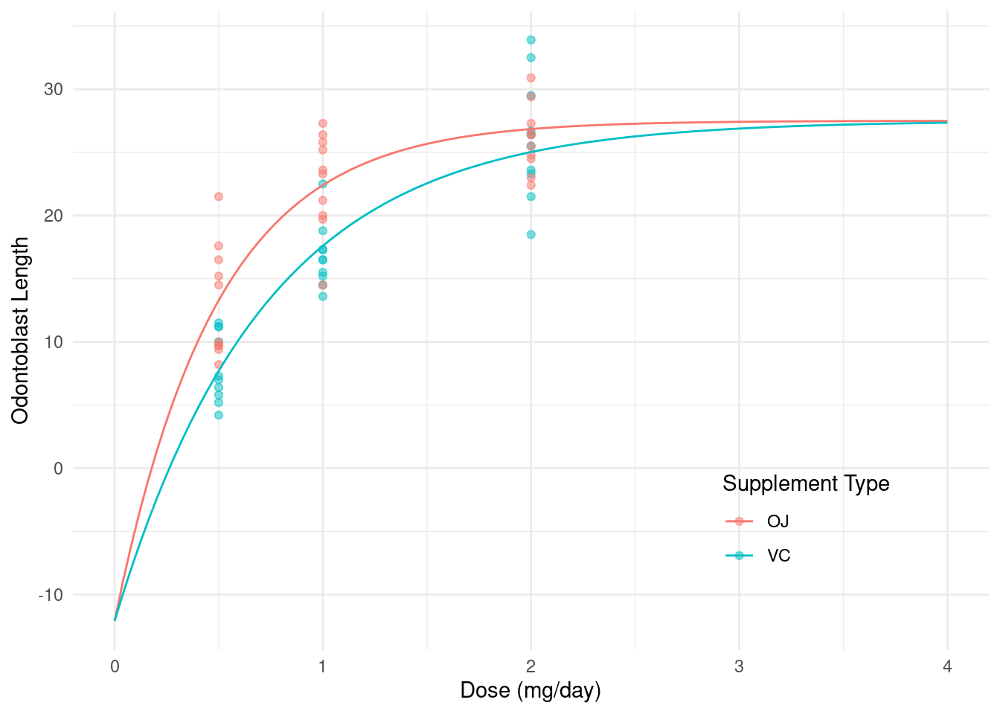
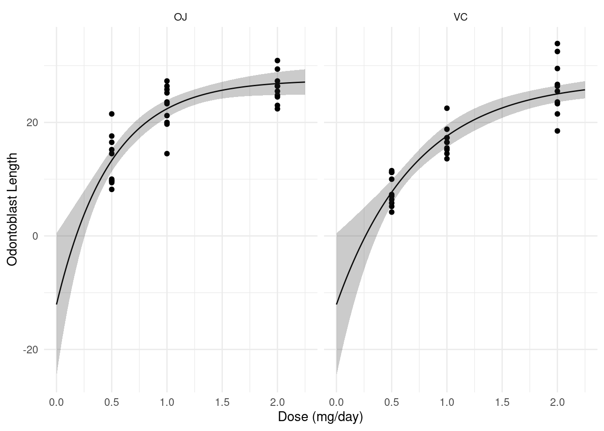
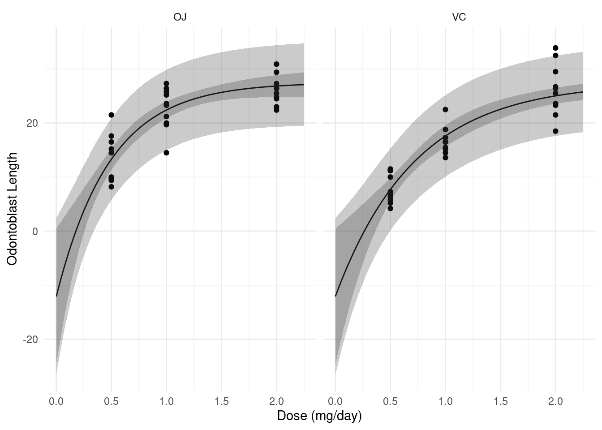

You can also download a PDF copy of this lecture.
A nonlinear regression model is any model that cannot be written as \[ E(Y_i) = \beta_0 + \beta_1 x_{i1} + \beta_2 x_{i2} + \cdots + \beta_k x_{ik}, \] such that \(x_{i1}, x_{i2}, \dots, x_{ik}\) do not depend on any unknown parameters. A linear model must be linear in the parameters.
Example: Let’s consider an exponential model for the
ToothGrowth data, ignoring supplement type for now, such
that \[
E(Y_i) = \beta_0 + \beta_12^{-d_i/h}
\] where \(Y_i\) is length and
\(d_i\) is dose. If \(h\) is specified (say \(h\) = 1) we have a linear model that we can
write as \[
E(Y_i) = \beta_0 + \beta_1x_i,
\] where \(x_i = 2^{-d_i/1}\).
We can estimate this model in the usual way using lm.
m <- lm(len ~ I(2^(-dose/1)), data = ToothGrowth)
summary(m)$coefficients Estimate Std. Error t value Pr(>|t|)
(Intercept) 35.14 1.555 22.60 1.942e-30
I(2^(-dose/1)) -33.61 2.988 -11.25 3.303e-16But suppose we want to treat \(h\) as an unknown parameter to be estimated like \(\beta_0\) and \(\beta_1\)? This would not be a linear model. We can write the model as \[ E(Y_i) = \beta_0 + \beta_1x_i, \] where \(x_i = 2^{d_i/h}\), but now \(x_i\) depends on an unknown parameter (\(h\)) and so the model is not linear in the parameters and thus not a linear model.
The nls function can be used to estimate a
nonlinear regression model (the nls stands for
“nonlinear least squares”). But its arguments are a little different
from lm.
The model must be written mathematically rather than symbolically. And this requires that we know the correct operators/functions in R corresponding to the desired mathematical operators/functions.
The starting values of the parameter estimates must be provided. This does two things: it identifies what parts of the model formula are parameters, and it provides initial values for an algorithm to use to solve the least squares optimization problem.
Example: First we will replicate the results for the
linear model where \(h\) is
known/specified, but now using nls.
m <- nls(len ~ beta0 + beta1*2^(-dose/1), data = ToothGrowth,
start = list(beta0 = 0, beta1 = 0))
summary(m)$coefficients Estimate Std. Error t value Pr(>|t|)
beta0 35.14 1.555 22.60 1.942e-30
beta1 -33.61 2.988 -11.25 3.303e-16Note the starting values. For a linear model we (usually) do not need to provide good starting values so zeros work just fine. Now consider a nonlinear model where \(h\) is also an unknown parameter.
m <- nls(len ~ beta0 + beta1*2^(-dose/h), data = ToothGrowth,
start = list(beta0 = 32, beta1 = -33, h = 1))
summary(m)$coefficients Estimate Std. Error t value Pr(>|t|)
beta0 27.9366 2.1482 13.005 1.062e-18
beta1 -36.6251 6.1143 -5.990 1.493e-07
h 0.4632 0.1459 3.174 2.422e-03Specifying “good” starting values is important. What if we don’t provide good starting values?
m <- nls(len ~ beta0 + beta1*2^(-dose/h), data = ToothGrowth,
start = list(beta0 = 0, beta1 = 0, h = 1))Error in nlsModel(formula, mf, start, wts, scaleOffset = scOff, nDcentral = nDcntr): singular gradient matrix at initial parameter estimatesHow do we find good starting values? One approach is to use an approximate model like we did here that is linear. Another approach is to “eyeball” the estimates from a plot.
We can plot the model in the usual way.
d <- expand.grid(dose = seq(0, 4, length = 100))
d$yhat <- predict(m, newdata = d)
p <- ggplot(ToothGrowth, aes(x = dose, y = len)) +
geom_point(aes(color = supp), alpha = 0.5) +
geom_line(aes(y = yhat), data = d) +
labs(x = "Dose (mg/day)", y = "Odontoblast Length",
color = "Supplement Type") +
theme_minimal() + theme(legend.position = c(0.8,0.2))
plot(p) We can add some annotation if desired to highlight the interesting quantities.
summary(m)$coefficients Estimate Std. Error t value Pr(>|t|)
beta0 27.9366 2.1482 13.005 1.062e-18
beta1 -36.6251 6.1143 -5.990 1.493e-07
h 0.4632 0.1459 3.174 2.422e-03p <- p + geom_hline(yintercept = 27.94, linetype = 3) # asymptote (b0)
p <- p + geom_hline(yintercept = 27.94 - 36.63, linetype = 3) # intercept (b0 + b1)
p <- p + geom_hline(yintercept = 27.94 - 36.63/2, linetype = 3) # half-way (b0 + b1/2)
p <- p + geom_vline(xintercept = 0.46, linetype = 3) # half-life (h)
plot(p)
Recall that the “intercept” is \(\beta_0 +
\beta_1\). We can make inferences concerning this quantity using
lincon.
m <- nls(len ~ beta0 + beta1*2^(-dose/h), data = ToothGrowth,
start = list(beta0 = 32, beta1 = -33, h = 0.75))
lincon(m, a = c(1,1,0)) # 1*b1 + 1*b2 + 0*h = b1 + b2 estimate se lower upper tvalue df pvalue
(1,1,0),0 -8.688 7.562 -23.83 6.455 -1.149 57 0.2554Does this make sense?
We can also replicate the estimates of the asymptote (\(\beta_0\)) and half-life (\(h\)) parameters using
lincon.
cbind(summary(m)$coefficients, confint(m)) Estimate Std. Error t value Pr(>|t|) 2.5% 97.5%
beta0 27.9366 2.1482 13.005 1.062e-18 24.7232 37.229
beta1 -36.6251 6.1143 -5.990 1.493e-07 -57.3146 -28.105
h 0.4632 0.1459 3.174 2.422e-03 0.2647 1.135lincon(m, c(1,0,0)) # asymptote (beta0) estimate se lower upper tvalue df pvalue
(1,0,0),0 27.94 2.148 23.63 32.24 13 57 1.062e-18lincon(m, c(0,0,1)) # half-life (h) estimate se lower upper tvalue df pvalue
(0,0,1),0 0.4632 0.1459 0.171 0.7554 3.174 57 0.002422Note the difference in the confidence intervals (particularly for
\(h\)). Here confint and
lincon using different kinds of confidence intervals:
confint uses “profile-likelihood” intervals and
lincon uses “Wald” intervals. We will discuss
profile-likelihood confidence intervals later, but note here that
typically they are more accurate.
The emmeans and contrast functions cannot
(yet) be applied to a nls object. We must rely on something
like lincon or clever parameterization (see below).
Now consider the model \[
E(Y_i) =
\begin{cases}
\beta_0 + \beta_12^{-x_i/h_{\text{OJ}}}, & \text{if the
supplement type is OJ}, \\
\beta_0 + \beta_12^{-x_i/h_{\text{VC}}}, & \text{if the
supplement type is VC},
\end{cases}
\] where \(x_i\) is dose. There
are several ways we can handle case-wise models with nls:
indicator variables, the ifelse function, and the
case_when function.
We could write the model as \[
E(Y_i) = \beta_0 + \beta_12^{-x_i/(o_ih_{\text{OJ}} +
v_ih_{\text{VC}})},
\] where \(o_i\) and \(v_i\) are indicator variables for the OJ
and VC supplement types, respectively. In R we can program these
indicator variables as supp == "OJ" and
supp == "VC", respectively. These will return
TRUE or FALSE, but will be interpreted as 1 or
0, respectively, if used in a calculation. Here is how we can write this
model in nls.
m <- nls(len ~ b0 + b1*2^(-dose/((supp == "OJ")*hoj + (supp == "VC")*hvc)),
data = ToothGrowth, start = c(b0 = 28, b1 = -37, hoj = 0.46, hvc = 0.46))
summary(m)$coefficients Estimate Std. Error t value Pr(>|t|)
b0 27.5018 1.39516 19.712 7.258e-27
b1 -39.5856 5.47238 -7.234 1.422e-09
hoj 0.3382 0.06978 4.846 1.036e-05
hvc 0.5001 0.11208 4.462 3.963e-05We could actually get away with one indicator variable if we are a little clever (and we are).
m <- nls(len ~ b0 + b1*2^(-dose/((supp == "OJ")*hoj + (1 - (supp == "OJ"))*hvc)),
data = ToothGrowth, start = c(b0 = 28, b1 = -37, hoj = 0.46, hvc = 0.46))
summary(m)$coefficients Estimate Std. Error t value Pr(>|t|)
b0 27.5018 1.39516 19.712 7.258e-27
b1 -39.5856 5.47238 -7.234 1.422e-09
hoj 0.3382 0.06978 4.846 1.036e-05
hvc 0.5001 0.11208 4.462 3.963e-05Here is a plot of the model with the data.
d <- expand.grid(dose = seq(0, 4, length = 100), supp = c("OJ","VC"))
d$yhat <- predict(m, newdata = d)
p <- ggplot(ToothGrowth, aes(x = dose, y = len, color = supp)) +
geom_point(alpha = 0.5) +
geom_line(aes(y = yhat), data = d) +
labs(x = "Dose (mg/day)", y = "Odontoblast Length",
color = "Supplement Type") +
theme_minimal() + theme(legend.position = c(0.8,0.2))
plot(p)
When there are only two cases it can be convenient to use
ifelse.
m <- nls(len ~ b0 + b1*2^(-dose/ifelse(supp == "OJ", hoj, hvc)),
start = c(b0 = 28, b1 = -37, hoj = 0.46, hvc = 0.46),
data = ToothGrowth)
summary(m)$coefficients Estimate Std. Error t value Pr(>|t|)
b0 27.5018 1.39516 19.712 7.258e-27
b1 -39.5856 5.47238 -7.234 1.422e-09
hoj 0.3382 0.06978 4.846 1.036e-05
hvc 0.5001 0.11208 4.462 3.963e-05Here is another way we could write that using
ifelse.
m <- nls(len ~ ifelse(supp == "OJ", b0 + b1*2^(-dose/hoj), b0 + b1*2^(-dose/hvc)),
start = c(b0 = 28, b1 = -37, hoj = 0.46, hvc = 0.46),
data = ToothGrowth)
summary(m)$coefficients Estimate Std. Error t value Pr(>|t|)
b0 27.5018 1.39516 19.712 7.258e-27
b1 -39.5856 5.47238 -7.234 1.422e-09
hoj 0.3382 0.06978 4.846 1.036e-05
hvc 0.5001 0.11208 4.462 3.963e-05When there are more than two cases using ifelse can
be tedious because we have to use nested ifelse functions.
An easier approach is to use the case_when function from
the dplyr package.
library(dplyr) # for case_when
m <- nls(len ~ case_when(
supp == "OJ" ~ b0 + b1*2^(-dose/hoj),
supp == "VC" ~ b0 + b1*2^(-dose/hvc),
), data = ToothGrowth, start = c(b0 = 28, b1 = -37, hoj = 0.46, hvc = 0.46))
summary(m)$coefficients Estimate Std. Error t value Pr(>|t|)
b0 27.5018 1.39516 19.712 7.258e-27
b1 -39.5856 5.47238 -7.234 1.422e-09
hoj 0.3382 0.06978 4.846 1.036e-05
hvc 0.5001 0.11208 4.462 3.963e-05Ultimately it may be a matter of which is easiest to code.
Suppose we want to compare the two supplement types by making inferences about the difference \(h_{\text{VC}} - h_{\text{OJ}}\)?
summary(m)$coefficients Estimate Std. Error t value Pr(>|t|)
b0 27.5018 1.39516 19.712 7.258e-27
b1 -39.5856 5.47238 -7.234 1.422e-09
hoj 0.3382 0.06978 4.846 1.036e-05
hvc 0.5001 0.11208 4.462 3.963e-05lincon(m, a = c(0,0,-1,1)) # 0*b0 + 0*b1 - 1*hoj + 1*hvc = hvc - hoj estimate se lower upper tvalue df pvalue
(0,0,-1,1),0 0.162 0.05532 0.05115 0.2728 2.928 56 0.004927But suppose we parameterize the model as \[ E(Y_i) = \begin{cases} \beta_0 + \beta_12^{-x_i/h}, & \text{if the supplement type is OJ}, \\ \beta_0 + \beta_12^{-x_i/(h + \delta)}, & \text{if the supplement type is VC}, \end{cases} \] so that \(h\) is the half-life parameter for OJ, \(h + \delta\) is the half-life parameter for VC, and \(\delta\) is the difference between them.
m <- nls(len ~ case_when(
supp == "OJ" ~ b0 + b1*2^(-dose/h),
supp == "VC" ~ b0 + b1*2^(-dose/(h + delta))
), data = ToothGrowth, start = c(b0 = 28, b1 = -37, h = 0.46, delta = 0))
summary(m)$coefficients Estimate Std. Error t value Pr(>|t|)
b0 27.5018 1.39516 19.712 7.258e-27
b1 -39.5856 5.47238 -7.234 1.422e-09
h 0.3382 0.06978 4.846 1.036e-05
delta 0.1620 0.05532 2.928 4.927e-03Same model, different parameterization. Now we do not need to use
lincon to obtain inferences for the difference between the
two half life parameters, although we would need to use it to obtain
inferences for the half life parameter for VC which is \(h+\delta\).
lincon(m, a = c(0, 0, 1, 1)) estimate se lower upper tvalue df pvalue
(0,0,1,1),0 0.5001 0.1121 0.2756 0.7247 4.462 56 3.963e-05Interestingly using confint on these models “chokes”
when trying to compute the profile-likelihood confidence interval for
\(\delta\), although we can fix it by
increasing the maximum number of iterations used in the estimation
process (which is also used by confint).
confint(m)Error in prof$getProfile(): number of iterations exceeded maximum of 50m <- nls(len ~ b0 + b1*2^(-dose/ifelse(supp == "OJ", h, h + delta)),
data = ToothGrowth, start = c(b0 = 28, b1 = -37, h = 0.46, delta = 0),
control = nls.control(maxiter = 1000))
confint(m) 2.5% 97.5%
b0 25.18143 30.8451
b1 -53.75676 -31.4127
h 0.23541 0.5268
delta 0.08001 0.2929Alternatively we can easily compute a Wald confidence interval.
lincon(m, a = c(0,0,0,1)) # 0*b0 + 0*b1 + 0*h + 1*delta = delta estimate se lower upper tvalue df pvalue
(0,0,0,1),0 0.162 0.05532 0.05115 0.2728 2.928 56 0.004927Actually if you omit the a argument lincon
will return inferences for the model parameters like those given by
summary and confint (but using Wald confidence
intervals).
lincon(m) estimate se lower upper tvalue df pvalue
b0 27.5018 1.39516 24.70701 30.2967 19.712 56 7.258e-27
b1 -39.5856 5.47238 -50.54805 -28.6231 -7.234 56 1.422e-09
h 0.3382 0.06978 0.19838 0.4779 4.846 56 1.036e-05
delta 0.1620 0.05532 0.05115 0.2728 2.928 56 4.927e-03This effectively causes lincon to use four sets of
coefficients to make inferences about each parameter:
c(1,0,0,0), c(0,1,0,0),
c(0,0,1,0), and c(0,0,0,1).
nlsWe can use nls to estimate a linear model. Consider the
following linear model.
m.whiteside <- lm(Gas ~ Insul + Temp + Insul:Temp, data = MASS::whiteside)
summary(m.whiteside)$coefficients Estimate Std. Error t value Pr(>|t|)
(Intercept) 6.8538 0.13596 50.409 7.997e-46
InsulAfter -2.1300 0.18009 -11.827 2.316e-16
Temp -0.3932 0.02249 -17.487 1.976e-23
InsulAfter:Temp 0.1153 0.03211 3.591 7.307e-04This can be written as \[
E(G_i) = \beta_0 + \beta_1 d_i + \beta_2 t_i + \beta_3 d_i t_i,
\] where \(G_i\) is gas
consumption, \(t_i\) is temperature,
and \(d_i\) is defined as \[
d_i =
\begin{cases}
1, & \text{if the $i$-th observation is after insulation}, \\
0, & \text{otherwise}.
\end{cases}
\] Thus we can also write the model case-wise as \[
E(G_i) =
\begin{cases}
\beta_0 + \beta_2t_i, & \text{if the $i$-th observation is
before insulation}, \\
\beta_0 + \beta_1 + (\beta_2 + \beta_3)t_i, & \text{if the
$i$-th observation is after insulation.}
\end{cases}
\] Here are a few different ways to estimate this model using
nls.
m1 <- nls(Gas ~ b0 + b1*(Insul == "After") + b2*Temp + b3*(Insul == "After")*Temp,
data = MASS::whiteside, start = c(b0 = 0, b1 = 0, b2 = 0, b3 = 0))
summary(m1)$coefficients Estimate Std. Error t value Pr(>|t|)
b0 6.8538 0.13596 50.409 7.997e-46
b1 -2.1300 0.18009 -11.827 2.316e-16
b2 -0.3932 0.02249 -17.487 1.976e-23
b3 0.1153 0.03211 3.591 7.307e-04m2 <- nls(Gas ~ ifelse(Insul == "Before", b0 + b2*Temp,
b0 + b1 + (b2 + b3)*Temp), data = MASS::whiteside,
start = c(b0 = 0, b1 = 0, b2 = 0, b3 = 0))
summary(m2)$coefficients Estimate Std. Error t value Pr(>|t|)
b0 6.8538 0.13596 50.409 7.997e-46
b1 -2.1300 0.18009 -11.827 2.316e-16
b2 -0.3932 0.02249 -17.487 1.976e-23
b3 0.1153 0.03211 3.591 7.307e-04m3 <- nls(Gas ~ case_when(
Insul == "Before" ~ b0 + b2*Temp,
Insul == "After" ~ b0 + b1 + (b2 + b3)*Temp),
data = MASS::whiteside,
start = c(b0 = 0, b1 = 0, b2 = 0, b3 = 0))
summary(m3)$coefficients Estimate Std. Error t value Pr(>|t|)
b0 6.8538 0.13596 50.409 7.997e-46
b1 -2.1300 0.18009 -11.827 2.316e-16
b2 -0.3932 0.02249 -17.487 1.976e-23
b3 0.1153 0.03211 3.591 7.307e-04nlsThe predict function produces the estimated expected
response for any combination of explanatory variables. For example,
d <- expand.grid(supp = c("VC","OJ"), dose = c(0.5, 1, 1.5, 2))
d$yhat <- predict(m, newdata = d)
d supp dose yhat
1 VC 0.5 7.705
2 OJ 0.5 13.297
3 VC 1.0 17.602
4 OJ 1.0 22.405
5 VC 1.5 22.551
6 OJ 1.5 25.673
7 VC 2.0 25.026
8 OJ 2.0 26.845However predict does not provide standard errors or
confidence intervals for estimating expected responses based on
nls, and we cannot use contrast with
nls. But we can use the function nlsint from
the trtools package to get approximate standard errors
and confidence or prediction intervals from a nls
object.
library(trtools)
nlsint(m, newdata = d) fit se lwr upr
1 7.705 1.0885 5.525 9.886
2 13.297 0.9857 11.322 15.272
3 17.602 0.9868 15.625 19.579
4 22.405 0.7711 20.860 23.949
5 22.551 0.8758 20.796 24.305
6 25.673 0.7342 24.202 27.144
7 25.026 0.7322 23.559 26.493
8 26.845 1.0098 24.823 28.868cbind(d, nlsint(m, newdata = d)) supp dose yhat fit se lwr upr
1 VC 0.5 7.705 7.705 1.0885 5.525 9.886
2 OJ 0.5 13.297 13.297 0.9857 11.322 15.272
3 VC 1.0 17.602 17.602 0.9868 15.625 19.579
4 OJ 1.0 22.405 22.405 0.7711 20.860 23.949
5 VC 1.5 22.551 22.551 0.8758 20.796 24.305
6 OJ 1.5 25.673 25.673 0.7342 24.202 27.144
7 VC 2.0 25.026 25.026 0.7322 23.559 26.493
8 OJ 2.0 26.845 26.845 1.0098 24.823 28.868The intervals are confidence intervals by default. Prediction
intervals can be obtained using interval = prediction (as
you would with the predict function with a linear
model).
The reason why predict does not provide standard errors
and thus confidence intervals for a nls object is that the
estimated expected response is not a linear function of the
model parameters in a nonlinear model. The nlsint function
uses what is called the delta method to come up with an
approximate standard error. We will discuss the delta method later.
The nlsint function is also useful for plotting
confidence and/or prediction intervals.
d <- expand.grid(supp = c("OJ", "VC"), dose = seq(0, 2.25, length = 100))
d <- cbind(d, nlsint(m, newdata = d))
p <- ggplot(ToothGrowth, aes(x = dose, y = len)) +
geom_point() + facet_wrap(~ supp) + theme_minimal() +
geom_line(aes(y = fit), data = d) +
geom_ribbon(aes(x = dose, ymin = lwr, ymax = upr, y = NULL),
alpha = 0.25, data = d) +
labs(x = "Dose (mg/day)", y = "Odontoblast Length")
plot(p)
d <- expand.grid(supp = c("OJ", "VC"), dose = seq(0, 2.25, length = 100))
d <- cbind(d, nlsint(m, newdata = d, interval = "prediction"))
p <- p + geom_ribbon(aes(x = dose, ymin = lwr, ymax = upr, y = NULL),
alpha = 0.25, data = d)
plot(p)